Conception et vérification
de systèmes critiques
La spécification des propriétés avec la logique LTL
2A Cursus Ingénieurs
- ST5 : Modélisation fonctionnelle et régulation
CentraleSupelec - Université Paris-Saclay - 2025/2026
CentraleSupelec - Université Paris-Saclay - 2025/2026

Principe du Model-Checking
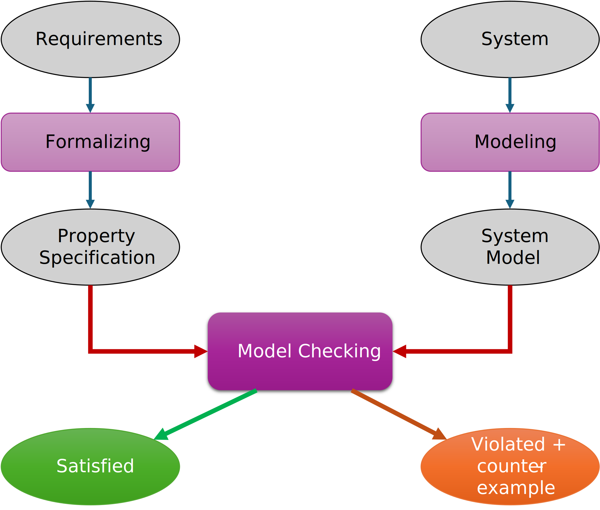
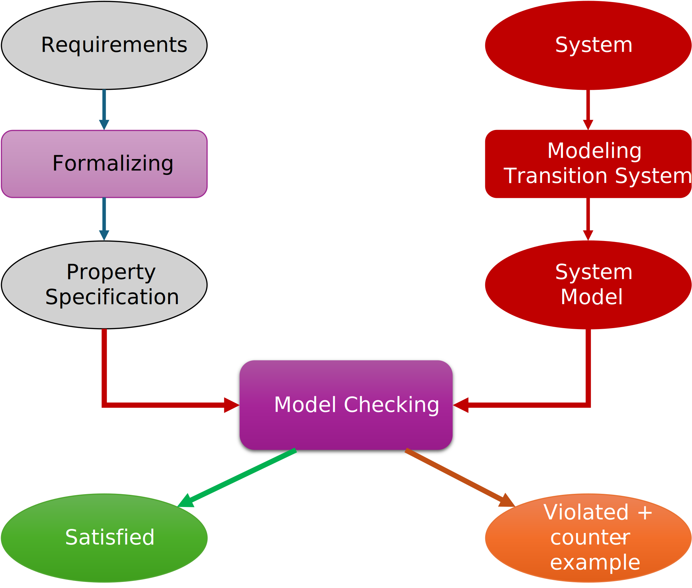
Rappel
- Un systèmes de transition $TS$ est un tuple $(S, \delta, I, AP, \mathcal{L})$
- Un fragment de chemin infini $\pi$ est une séquence d'états infinie :
$\pi = s_0 s_1 s_2\ldots~$ tel que $\forall i \geq 0, s_i \longrightarrow s_{i+1} \in \delta$ -
La trace du chemin $\pi = s_0 s_1 s_2\ldots$ $\in S^{\omega}$ avec $\mathcal{L} : S \longrightarrow 2^{AP}$
- $trace(\pi) = \sigma = \mathcal{L}(s_0) \mathcal{L}(s_1) \mathcal{L}(s_2)\ldots$ $\in (2^{AP})^{\omega}$
Principe du Model-Checking
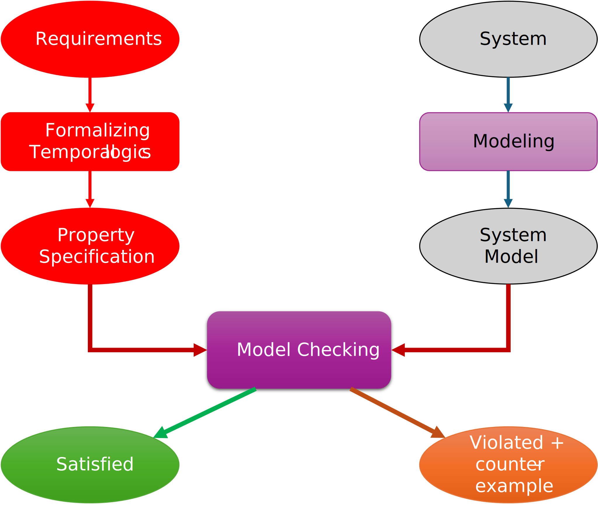
Logiques temporelles
Pourquoi ?
- Permettent d'exprimer des propriétés sur des séquences d'observations
- Utilisation de connecteurs temporels et de quantificateurs sur les chemins
- On pourrait utiliser la logique du premier ordre.
$\phi ~~~~ ::= ~~~~ true ~~~~ | ~~~~ a ~~~~ | ~~~~ \phi ~~~~ \wedge ~~~~ \phi ~~~~ | ~~~~ \neg~\phi ~~~~ | ~~~~ \exists x.~\phi~ ~~~~ | ~~~~ ...$- Exemple : "toute requête sera un jour satisfaite"
- $ \forall t . (\text{requete} \to \exists t' \geq t . (\text{reponse}))$
- difficile à écrire/comprendre
- vérification peu efficace
Logiques temporelles
Pourquoi ?
- Pas de variable pour gérer le temps (instants implicites)
- Temporel $\neq$ temporisé
la logiques temporelles ne quantifient pas écoulement du temps. - Deux approches :
- temps linéaire : propriétés des séquences d'exécutions (futur déterminé)
- temps arborescent : propriétés de l'arbre d'exécutions (tous les futurs possibles)
Propositional Linear Temporal logic (LTL)
$\phi ~~~~ ::= ~~~~ true ~~~~ | ~~~~ a ~~~~ | ~~~~ \phi ~~~~ \wedge ~~~~ \phi ~~~~ | ~~~~ \neg~\phi ~~~~ $
$| ~~~~ \bigcirc~\phi ~~~~ $
$| ~~~~ \square~\phi ~~~~ $
avec $a \in AP$
$~~~~~~~~~~~~~~~~~~~~~~~~ \bigcirc$ $\equiv$ $\text{X}$ (next)
$~~~~~ \square$ $\equiv$ $\text{G}$ (always)
$\sigma \models a ~~~~~$
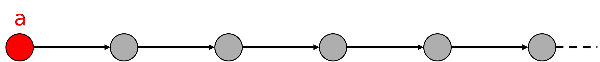
$\sigma \models \bigcirc~a$
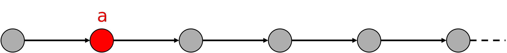
$\sigma \models \square~a$
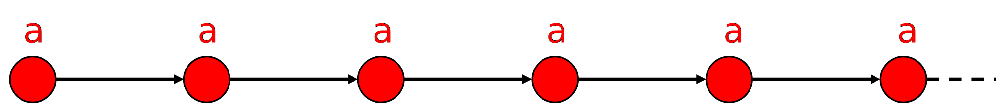
Opérateurs temporels dérivés
$\square~\phi \equiv \text{G}~\phi$
(always)
(always)
$\Diamond ~ \phi \equiv \text{F}~\phi \equiv \neg \square \neg \phi$
(eventually)
(eventually)
$\Diamond \square ~\phi$
(persistence)
(persistence)
$\square \Diamond ~\phi \equiv \neg \Diamond \square \neg \phi$
(infinitely many)
(infinitely many)
$\sigma \models \square~a$
$\sigma \models \Diamond~a~~$
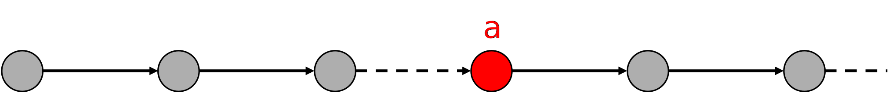
$\sigma \models \Diamond \square~a$
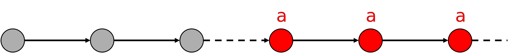
$\sigma \models \square \Diamond~a$
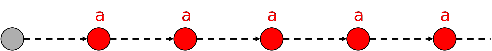
L'opérateur Until
$\phi ~~~ ::= ~~~ true ~~~ | ~~~ a ~~~ | ~~~ \phi ~~~ \wedge ~~~ \phi ~~~ | ~~~ \neg~\phi ~~~
| ~~~ \bigcirc~\phi ~~~ | ~~~ \square~\phi ~~~ $
$| ~~~ \phi ~~~ \bigcup ~~~ \phi$
$try \Rightarrow \bigcirc~deliv$
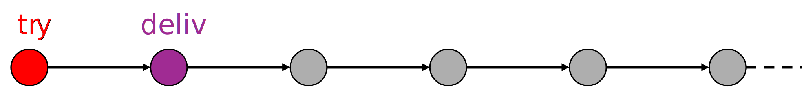
$try \Rightarrow \Diamond~deliv$
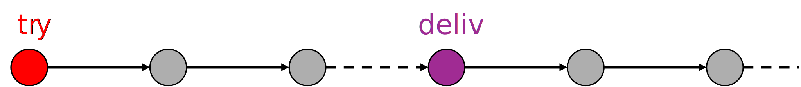
$~~~try~\bigcup~deliv$
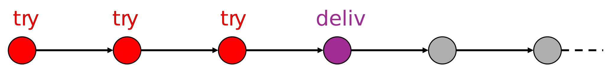
$\Diamond~\phi~\equiv~true~\cup~\phi~~~~$ et $~~~~\square~\phi \equiv \neg \Diamond \neg \phi$
La sémantique des opérateurs LTL
- $\phi~~::= ~~ true ~~ | ~~ a ~~ | ~~ \phi_1 ~~ \wedge ~~ \phi_2 ~~ | ~~ \neg~\phi ~~ | ~~ \bigcirc\phi ~~ | ~~ \square~\phi ~~ | ~~ \Diamond ~\phi ~~ | ~~ \phi_1 ~~ \bigcup ~~ \phi_2$
-
for $~~\sigma = A_0A_1A_2\dots \in (2^{AP})^{\omega}$ :
- $\sigma \vDash true $
- $\sigma \vDash a ~~~~~~~~~~~~~~~~$ iff $~~~~~~ a \in A_0$
- $\sigma \vDash \phi_1 \wedge \phi_2 ~~~~~~$ iff $~~~~~~ \sigma \vDash \phi_1 ~~$ and $~~ \sigma \vDash \phi_2$
- $\sigma \vDash \neg~\phi ~~~~~~~~~~~~$ iff $~~~~~~ \sigma \nvDash \phi$
- $\sigma \vDash \bigcirc~\phi ~~~~~~~~~~~$ iff $~~~~~~ A_1A_2A_3\dots \vDash \phi$
- $\sigma \vDash \square~\phi ~~~~~~~~~~~~$ iff $~~~~~~ \forall~ i \geq 0, ~A_iA_{i+1}A_{i+2}\dots \vDash \phi$
- $\sigma \vDash \Diamond~\phi ~~~~~~~~~~~~$ iff $~~~~~~ \exists~ i \geq 0, ~A_iA_{i+1}A_{i+2}\dots \vDash \phi$
- $\sigma \vDash \phi_1 \bigcup \phi_2 ~~~~~~$ iff $~~~~~~ \exists~ j \geq 0, ~A_jA_{j+1}A_{j+2}\dots \vDash \phi_2~~~$ and
$~~~~~~~~~~~~~~~~~~~~~~~~~~~~~~~~~~~~\forall ~0 \leq i < j , ~A_iA_{i+1}A_{i+2}\dots \vDash \phi_1$
Propriété du temps linéaire
- Les propriétés du temps linéaire spécifient le comportement admissible
du système considéré- La propriété LT spécifie les traces qu'un $TS$ peut exhiber
Définition formelle
- Une propriété temporelle linéaire $P$ sur $AP$ est un sous-ensemble de $(2^{AP})^{\omega}$
- $TS$ satisfait $P$ (sur $AP$) :
- $TS \vDash P$ $~~~~~~~~~~~~~$ si et seulement si $~~~~~~~~~~~~~$ $Traces(TS) \subseteq P$ $\subseteq (2^{AP})^{\omega}$
- Nous utiliserons la logique temporelle linéaire (LTL) pour formaliser $P$
Exemple I
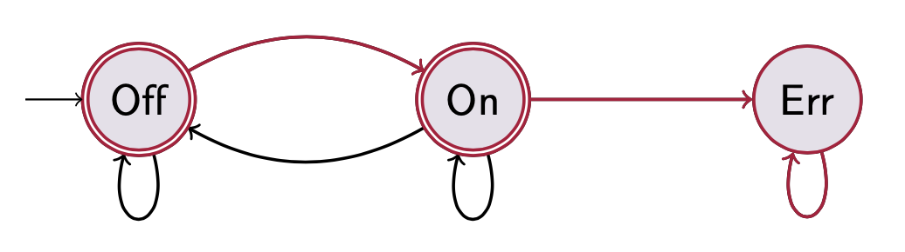
Prenant la trace $~~~~~ \sigma ~= ~$ Off On Err Err Err $~\ldots = ~$ Off On Err$^\omega$
- $\sigma ~\vDash$ Off $~~~~~~~~~~$ mais $\sigma ~\nvDash$ On $~~~~~~~~~~$ alors $\sigma ~\vDash~ \neg$On
- $\sigma ~\vDash~ \text{X}$ On
- $\sigma ~\vDash~ \text{X} \text{X}$ Err
- $\sigma ~\vDash~ $( Off $ \vee $ On )$~\text{U}$ Err
- $\sigma ~\vDash~ \text{G} ($ Err $ \Rightarrow \text{X} $ Err $)$
- $\sigma ~\vDash~ \text{G} ($ Err $ \Rightarrow \text{G} $ Err $)$
- $\sigma ~\vDash~ \text{F} \text{G} $ Err
- $\sigma ~\vDash~ \text{X} \text{X} ~\text{G} $ Err
Exemple II
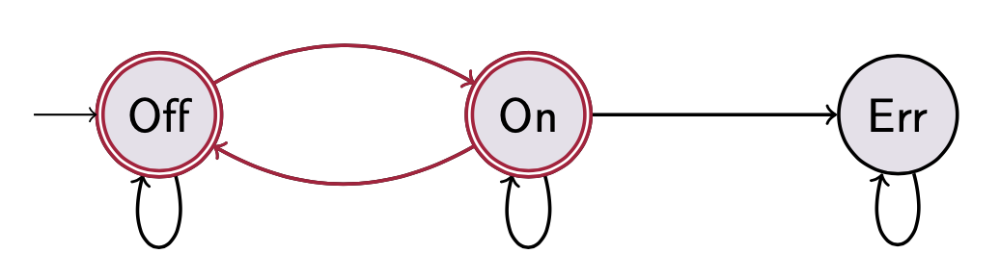
Prenant la trace $~~~~~ \sigma ~= ~$ Off On Off On Off $~\ldots =~$ (Off On)$^\omega$
- $\sigma~$ $\nvDash$ $~($ Off $\vee $ On $ )~\text{U}~$Err
- $\sigma~$ $\vDash$ $~\text{F}$ Err $\Rightarrow (($ Off $\vee$ On $)~\text{U}~ $Err ) $~~~~~~$ car $~~\sigma ~\nvDash~ \text{F} $ Err
- $\sigma~$ $\vDash$ $~\text{G} ($ On $\vee$ Off $)$
- $\sigma~$ $\vDash$ $~\text{G} \text{F}$ On $\wedge ~ \text{G} \text{F}$ Off
- $\sigma~$ $\nvDash$ $~\text{F} \text{G}$ On $\vee ~\text{F} \text{G}$ Off
- $\sigma~$ $\vDash$ $~\text{G}$ (Off $\Rightarrow \text{X}$ On) $\wedge ~ \text{G}$ (On $\Rightarrow \text{X}$ Off)
Rappel de l'Exemple
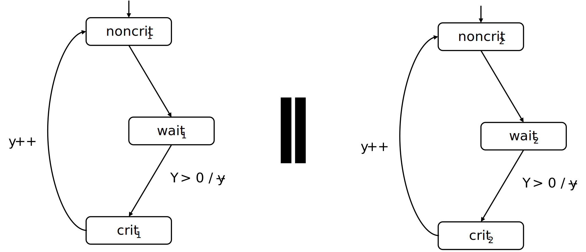
$y=0$ signifie "le verrou est actuellement possédé";
$y=1$ signifie "le verrou est libre"
Rappel de l'Exemple
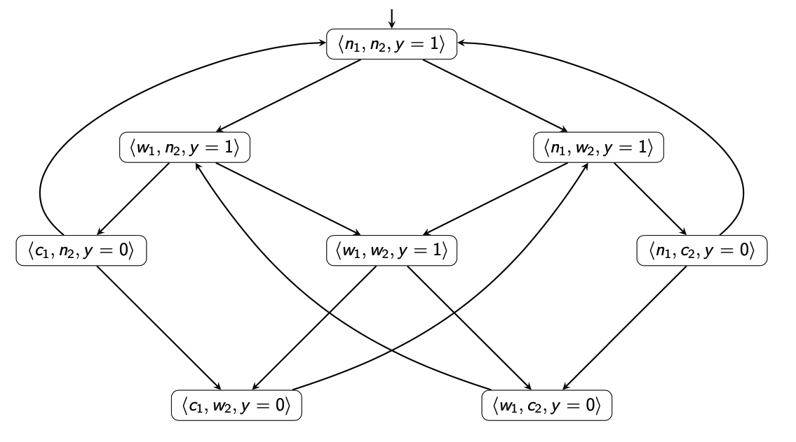
$n_i$ : $noncrit_i$, $~~~w_i$ : $wait_i$, $~~~c_i$ : $crit_i$
$n_i$ : $noncrit_i$, $~~~w_i$ : $wait_i$, $~~~c_i$ : $crit_i$
Comment spécifier
l'exclusion mutuelle ?
L'exclusion mutuelle
Il y a au plus un processus dans la section critique
Il y a au plus un processus dans la section critique
- Soit $AP = \{crit_1, crit_2\}$
- les autres propositions atomiques n'ont aucune pertinence pour cette propriété
- Formalisation LTL de la propriété LT
- $P_{mutex} = \text{G}~\neg~(crit_1 \wedge crit_2)$
- L'algorithme basé sur le sémaphore satisfait-il $P_{mutex}$ ?
La réponse
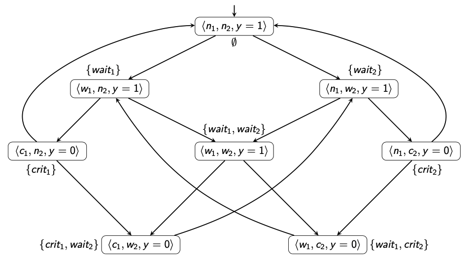
OUI ! car il n'existe aucun état accessible étiqueté avec
$\{crit_1,crit_2\}$
Comment spécifier
l'absence de famine ?
L'absence de famine
Un processus qui veut entrer dans la section critique
est finalement capable de le faire
Un processus qui veut entrer dans la section critique
est finalement capable de le faire
- Soit $AP = \{wait_1, crit_1, wait_2, crit_2\}$
- Formalisation LTL de la propriété LT
- $P_{nostarve} = \text{G}~(wait_1 \Rightarrow \text{F}~crit_1) \wedge \text{G}~(wait_2 \Rightarrow \text{F}~crit_2)$
- L'algorithme basé sur le sémaphore satisfait-il $P_{nostarve}$ ?
La réponse
NON ! Le processus un ou le processus deux risquent de mourir de faim !
La réponse
prenant $~~~~~~$ $\sigma = \emptyset (\{wait_1\} \{wait_1,wait_2\} \{wait_1,crit_2\})^{\omega} \in Traces(TS)$
mais $~~~~~~~~~~~~~~~~~~~~~~~~~~~~~~~~~~~~~$ $\sigma \vDash \text{F}(wait_1 \wedge \text{G}\neg~crit_1) \Rightarrow \sigma \notin P_{nostarve}$
mais $~~~~~~~~~~~~~~~~~~~~~~~~~~~~~~~~~~~~~$ $\sigma \vDash \text{F}(wait_1 \wedge \text{G}\neg~crit_1) \Rightarrow \sigma \notin P_{nostarve}$
La réponse
prenant $~~~~~~$ $\sigma = \emptyset (\{wait_2\} \{wait_1,wait_2\} \{crit_1,wait_2\})^{\omega} \in Traces(TS)$
mais $~~~~~~~~~~~~~~~~~~~~~~~~~~~~~~~~~~~~~$ $\sigma \vDash \text{F}(wait_2 \wedge \text{G}\neg~crit_2) \Rightarrow \sigma \notin P_{nostarve}$
mais $~~~~~~~~~~~~~~~~~~~~~~~~~~~~~~~~~~~~~$ $\sigma \vDash \text{F}(wait_2 \wedge \text{G}\neg~crit_2) \Rightarrow \sigma \notin P_{nostarve}$
La propriété d'Invariants
-
Propriété de sécurité typique $\to$ propriété d'exclusion mutuelle
- la mauvaise chose (avoir $ > 1$ processus dans la section critique) ne se produit jamais
- Une autre propriété de sécurité typique $\to$ vérifie les limites des variables (dépassement)
Ces propriétés sont des invariants
- Un invariant est une propriété LT
- qui est donné par une condition $\phi$ sur $AP$
- exige que la condition $\phi$ soit vraie pour tous les états (atteignables)
- exemple : la propriété d'exclusion mutuelle $\phi = \neg(crit_1 \wedge crit_2)$
La propriété d'Invariants
Définition formelle
- Une propriété LT $P_{inv}$ sur $AP$ est un invariant s'il existe une formule pure propositionnelle $\phi$ sur $AP$ telle que :
$$ P_{inv} = \text{G}~\phi $$
- $\phi$ est appelé une condition invariante de $P_{inv}$
- Notez que :
$TS \models P_{inv}$ $~~~~~~~~$ si et seulement si $~~~~~~~~$ $\forall s \in Reach(TS),~ \mathcal{L}(s) \vDash_{prop} \phi$ - $\phi$ doit être satisfait par tous les états initiaux et tous les états atteignables de $TS$
Propriétés de sécurité
- Propriétés de sécurité (safety property) $\to$ "rien de mauvais ne devrait arriver"
- une propriété invariante est une propriété de sécurité particulière
- Les propriétés de sécurité peuvent imposer des exigences sur des fragments de chemin finis et ne peuvent pas être vérifiées en considérant uniquement les états atteignables
-
A safety property which is not an invariant
- consider a cash dispenser
- property “money can only be withdrawn once a correct PIN has been provided”
- not an invariant, since it is not a state property
- a typical LTL example: Bounded Response $$ \square (request \Rightarrow \bigvee_{i=n}^m \bigcirc^i response) $$
Liveness properties
- Safety properties specify that “something bad never happens”
- Doing nothing easily fulfills a safety property
- as this will never lead to a “bad” situation
-
Safety properties are complemented by Liveness properties
- that require some progress
- that assert: ”something good” will happen eventually
- a typical LTL example: $\Diamond~\phi$
Examples of Liveness
- Back to our semaphore-based algorithm with $$ AP = \{wait_1, crit_1, wait_2, crit_2\} $$
- Eventually $$ \Diamond~crit_1 \wedge \Diamond~crit_2 $$
- Repeated eventually $$ \square \Diamond~crit_1 \wedge \square \Diamond~crit_2 $$
- Starvation freedom $$ \square~(wait_1 \Rightarrow \Diamond~crit_1) \wedge \square~(wait_2 \Rightarrow \Diamond~crit_2) $$
Example of Temporal Properties
-
Safety
- mutual exclusion : $\square \neg (crit_1 \wedge crit_2)$
- elevator : $\square (moving \Rightarrow doors_{closed})$
- traffic light : $\square (yellow \Rightarrow \bigcirc red)$
-
Liveness
- progress : $\Diamond~progress$
- response : $~~~~~~~~~~~~~~\square (try\_to\_send \Rightarrow \Diamond ~delivered)$
- termination : $\Diamond\square~terminated$
Example of Temporal Properties
-
Safety nuclear plant
- cooling : $\square \neg (temp_{high} \wedge cooling_{low})$
- alarm : $\square (temp_{high} \Rightarrow alarm)$
- saving : $\square (temp_{high} \Rightarrow \bigcirc react_{low})$
-
Liveness nuclear plant
- reactivity : $\square \Diamond~react_{high}$
- temperature : $~~~~~~~~~~~~~~~~~~~\square (react_{low} \Rightarrow \Diamond temp_{low})$